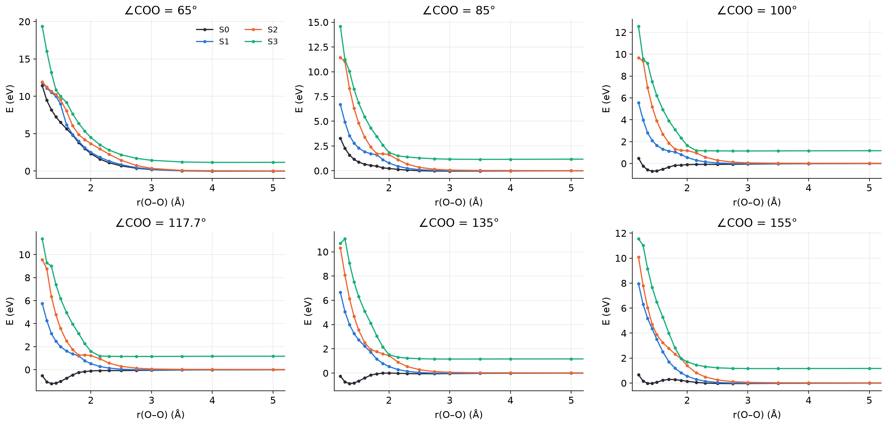
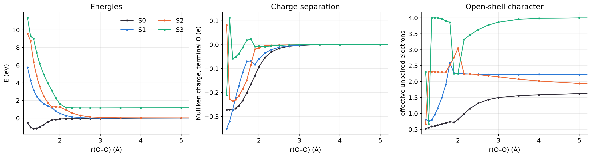
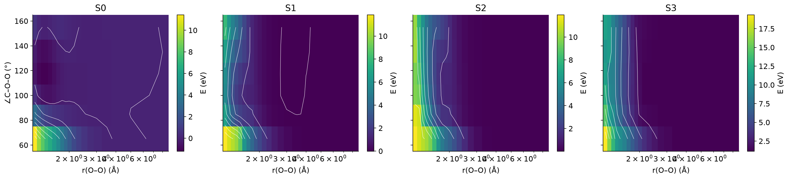
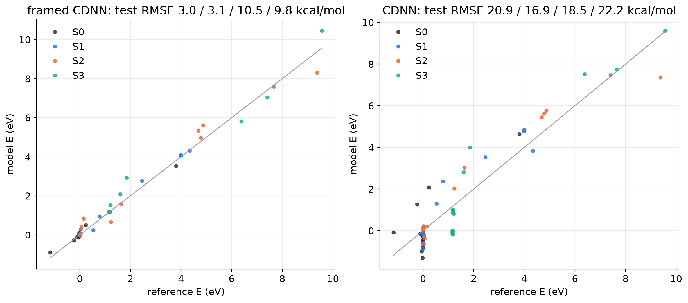
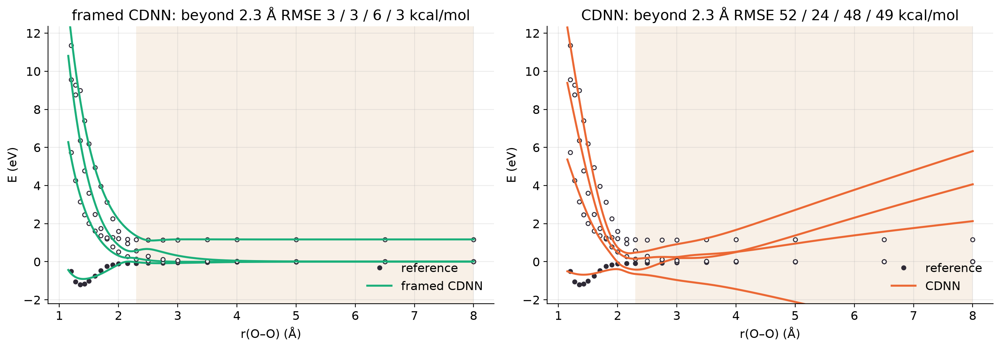
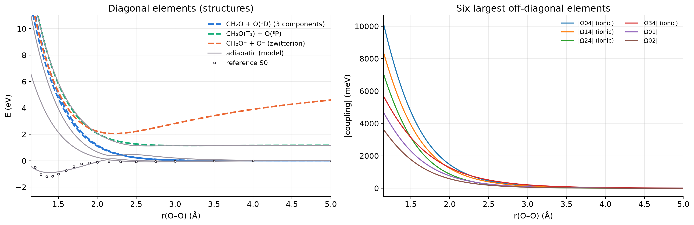
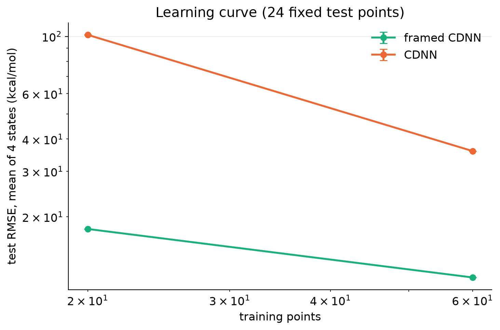
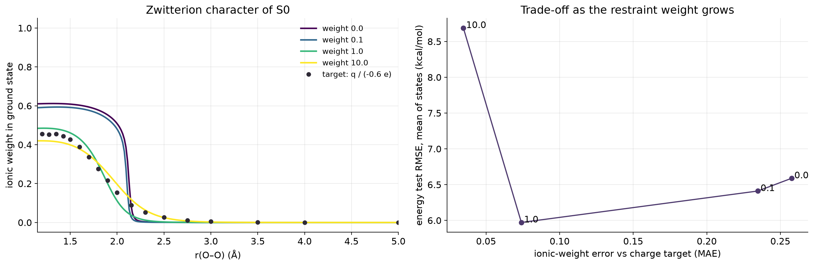

Tables
T1. Reference data
| quantity | value |
|---|---|
| method | SA4-CASSCF(8,6)/6-31G*, singlet A' (Cs), planar, CH2O fragment rigid |
| energies used for training | casscf |
| geometries | 120 |
| coordinates | r_OO 1.2–8, a_COO 65–155 |
| fixed | r_co = 1.272, r_ch = 1.08, a_hco = 120 |
| converged | 120 / 120 |
| consistent active space | 120 / 120 |
| O(¹D) components at largest r_OO: spread (meV) | 13.1 |
| S3 asymptote (eV) | 1.171 |
| S0 well depth along the cut (eV) | 1.206 |
| S0 minimum at r_OO (Å) | 1.350 |
tables/T1_reference_summary.csv
T2. Ladder anchors for the ion-pair structure (frame uses: experiment)
| quantity | experiment | computed (not run) |
|---|---|---|
| IE(CH₂O) (eV) | 10.880 (adiabatic) | |
| EA(O) (eV) | 1.461 | |
| O ¹D – ³P (eV) | 1.967 | |
| ΔE(ion pair) = IE − EA − ΔE(¹D) (eV) | 7.452 | |
| Coulomb crossing r* = 14.40 / ΔE (Å) | 1.93 |
tables/T2_ladder.csv
T3. RMSE (kcal/mol), mean ± s.d. over seeds
| test | model | S0 | S1 | S2 | S3 | seeds |
|---|---|---|---|---|---|---|
| random split: test | framed CDNN | 2.96 ± 0.00 | 3.10 ± 0.00 | 10.46 ± 0.00 | 9.84 ± 0.00 | 1 |
| random split: test | CDNN | 20.92 ± 0.00 | 16.91 ± 0.00 | 18.48 ± 0.00 | 22.22 ± 0.00 | 1 |
| trained r ≤ 2.3 Å: validation | framed CDNN | 4.03 ± 0.00 | 5.74 ± 0.00 | 16.69 ± 0.00 | 13.68 ± 0.00 | 1 |
| trained r ≤ 2.3 Å: validation | CDNN | 12.59 ± 0.00 | 17.46 ± 0.00 | 21.24 ± 0.00 | 13.96 ± 0.00 | 1 |
| trained r ≤ 2.3 Å: beyond 2.3 Å | framed CDNN | 2.71 ± 0.00 | 2.89 ± 0.00 | 5.82 ± 0.00 | 2.85 ± 0.00 | 1 |
| trained r ≤ 2.3 Å: beyond 2.3 Å | CDNN | 51.98 ± 0.00 | 23.72 ± 0.00 | 47.61 ± 0.00 | 49.30 ± 0.00 | 1 |
tables/T3_model_errors.csv
T4. Learning curve, test RMSE (kcal/mol) on 24 fixed points
| n train | model | mean RMSE | S0 | S1 | S2 | S3 |
|---|---|---|---|---|---|---|
| 20 | framed CDNN | 17.91 ± 0.00 | 9.07 | 17.72 | 25.46 | 19.40 |
| 60 | framed CDNN | 11.62 ± 0.00 | 5.74 | 11.08 | 14.83 | 14.82 |
| 20 | CDNN | 101.35 ± 0.00 | 60.75 | 87.48 | 108.43 | 148.74 |
| 60 | CDNN | 35.92 ± 0.00 | 34.74 | 35.12 | 32.38 | 41.44 |
tables/T4_learning_curve.csv
T5. Diabatic restraint (q_ref = -0.6 e): test RMSE (kcal/mol) and agreement with the charge target
| weight | S0 | S1 | S2 | S3 | ionic-weight MAE | ionic weight at 1.35 Å |
|---|---|---|---|---|---|---|
| 0.0 | 2.96 | 3.10 | 10.46 | 9.84 | 0.258 | 0.61 |
| 0.1 | 2.91 | 3.31 | 9.31 | 10.12 | 0.235 | 0.59 |
| 1.0 | 3.43 | 3.23 | 9.21 | 8.02 | 0.074 | 0.48 |
| 10.0 | 7.92 | 6.02 | 9.87 | 10.95 | 0.035 | 0.42 |
tables/T5_restraint.csv
Figures








Configuration
# Smoke test: shipped SA4-CASSCF(8,6)/6-31G* data, short training. Takes a few minutes.
[run]
name = "quick"
description = "Smoke test of the workflow on the shipped CASSCF data"
threads = 6
[refs]
source = "file"
file = "{diabml}/data/ch2oo_casscf.npz"
[ladder]
compute = false
use = "experiment"
[frame]
zeta_env = 1.0 # overlap envelope exponent (1/bohr): how fast learned corrections die off with r_OO
r_ref = 1.35 # envelope = 1 at this O-O distance (Angstrom)
feature_zetas = [0.6, 1.0, 1.6]
[train]
models = ["framed", "cdnn"] # framed = ChannelFrame + small networks; cdnn = plain CDNN (Shu et al. 2025)
exclude_flagged = true # skip unconverged points and points whose active space changed character
hidden_framed = [128, 64]
hidden_cdnn = [128, 64]
coupling_init = 0.1 # eV; framed couplings must not start at exactly 0 (their energy gradient vanishes there)
lr_framed = 2e-3
lr_cdnn = 1e-3
alpha2 = 1e-6 # L2 weight penalty (eq. 5 of the CDNN paper)
epochs = 400
restarts = 1
seeds = [0]
[train.random_split] # interpolation test: random train / validation / test split of all usable points
enabled = true
train_fraction = 0.75
val_fraction = 0.125
[train.extrapolation] # train only on r_OO <= r_train_max, test beyond it
enabled = true
r_train_max = 2.3
[train.learning_curve] # test error vs number of training points (fixed test set)
enabled = true
n_train = [20, 60]
test_fraction = 0.2
[train.restraint] # diabatic restraint: ground-state weight of the ionic structure follows the CASSCF charge
enabled = true
weights = [0.0, 0.1, 1.0, 10.0]
q_ref = -0.6 # terminal-O Mulliken charge taken to mean "fully zwitterionic" (an assumption: vary it)
min_gap_eV = 0.1 # apply only where S1 - S0 exceeds this (eigenvector derivatives blow up at degeneracies)